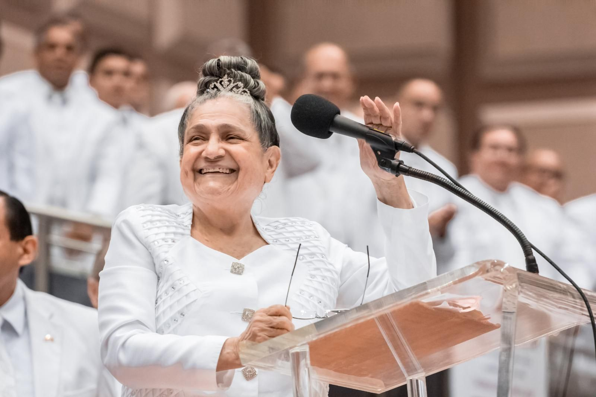

Na década de 1920, Juanita sofria de uma grave doença gástrica que a manteve sob tratamento médico por 12 anos. A condição piorou tanto que ele não conseguia nem comer. Os médicos a abandonaram e foi então que, em seu leito, Juanita clamou a Deus e prometeu que, se a curasse, o serviria e percorreria campos e povoados anunciando o evangelho da saúde e da salvação. Deus ouviu seu clamor; Uma senhora idosa que costumava visitar os enfermos veio a sua casa e rezou para ela, deixando Juanita totalmente sã instantaneamente. A partir desse momento cumpriu a sua promessa e entregou-se a Deus, filiando-se à Igreja Pentecostal.


Juanita García Peraza
Juanita García Peraza nasceu em 24 de junho de 1897 em Hatillo, Porto Rico. Ele veio de uma família de alta classe social. Desde criança demonstrou grandes valores morais e espirituais, amor pelos pobres, grande sensibilidade à dor alheia, coragem, integridade e caridade.

Começou a se distinguir na igreja por seu amor, humildade, consagração e santidade. Ela era presidente do grupo de senhoras e Deus a usou em profecia, repreendeu o pecado e pediu a unidade do povo de Deus. Os líderes da igreja não conseguiam entender que o Espírito de Deus se manifestava nela; eles não aceitaram o grande plano do Senhor de unificar sua Igreja. Por isso, Juanita enfrentou situações de imensa dor: humilharam-na, por ser mulher mandaram-na calar a boca; mas ela sempre foi tão humilde que confiou naquele que a escolheu. O Espírito Santo de Deus disse-lhe um dia: «Minha serva, empresta-me o teu corpo; Eu preciso de você para um grande trabalho. Quem te escuta, me ouve e quem se une a você se unirá a mim». Aflita por toda a perseguição que se levantava contra ela, ela clamou a Deus, e enquanto orava em seu quarto, viu por revelação uma estrela descer do céu em movimento circular. Em sua mente ele se perguntava onde cairia, mas acertou em sua testa: era a luz do Espírito Santo de Deus confirmando seu ministério.
No ano de 1940, junto com 11 irmãos, deixou a Igreja Pentecostal e passou a pregar uma tríplice mensagem de amor, liberdade e unidade. Estes foram os seguintes: Teófilo Vargas Seín (Aarón), Pedro Vargas, Encarnación Seín (Concepción), Luis Barrios, Octavio Velázquez, Blasina Barreto, Juan Catalán, Tomasa Catalán, Justa Corchado, Juana Allende e José "Pepe" Pastoriza . A Igreja Livre é formada e eles começam a se reunir em Arecibo, tanto nas casas dos irmãos recém-convertidos quanto em templos alugados. Juanita García decidiu deixar todos os seus bens materiais para servir a Deus com humildade.

Em 1947, a Congregação mudou-se para a capital, San Juan; a partir daí começa a desenvolver e divulgar sua mensagem. Além do grande trabalho espiritual, realizou um extraordinário trabalho social-comunitário. Ele pregou da melhor maneira: pelo exemplo. Ele conseguiu transformar sua comunidade em uma totalmente organizada. Desenvolveu cooperativas e corporações que ofereciam oportunidade de emprego e grandes benefícios e melhoria econômica aos membros da comunidade. Ele fundou uma escola bíblica, conhecida como Conselheiro, para instruir, orientar e orientar as crianças em seu desenvolvimento integral. Criou academias musicais, bandas e corais. Entre suas múltiplas composições, destacam-se os seguintes hinos: Marcha triunfal, Bem-vindo, O castiçal, A visão, O justo, O limpo de coração, A pedra branca, Se agiste como crente, As muralhas da cidade, entre outros.

Instituiu um Corpo de Guardas com a finalidade de vigiar gratuitamente todos os bens que a Congregação ia adquirindo e a comunidade em geral. Ele estabeleceu um corpo de homens e mulheres pregadores, diáconos e diaconisas que fazem o bem, pregam, rezam pelos enfermos e realizam trabalhos extraordinários onde quer que a Congregação Mita vá.
Como uma visionária, ela ansiava e profetizava a criação de uma égide para o cuidado dos idosos e uma escola
para crianças e adolescentes na comunidade, que após sua morte se concretizou. Ela fez um grande trabalho
missionário visitando os enfermos em suas casas e hospitais, orando por eles, oferecendo ajuda aos
necessitados e fazendo o bem com as mãos cheias. Ele visitou as prisões com palavras de encorajamento,
consolo e amor. Seu trabalho evangelístico foi incrível. Nos seus lábios sempre esteve a exortação e o
conselho através da palavra sábia, a admoestação pontual, mas ao mesmo tempo a paciência e a temperança que
sempre a caracterizaram. Desta forma, era de se esperar que seu trabalho ministerial influísse grandemente
no campo social e no aperfeiçoamento pessoal de muitos seres humanos e famílias inteiras em Porto Rico.
Muitos alcoólatras, drogados e deprimidos foram resgatados e hoje são homens e mulheres úteis, cidadãos
responsáveis e íntegros. Sua pregação profunda e de grande conteúdo espiritual alcançou o propósito divino
de transformar todos que ouviram e aceitaram a mensagem.
Sua influência foi tamanha que cruzou as fronteiras de Porto Rico para terras estrangeiras, estabelecendo a
Congregação nos Estados Unidos (Washington DC, Chicago e Nova York) e na República Dominicana (Santo Domingo
e Santiago de los Caballeros).
Ressaltamos que Juanita García Peraza deu à mulher a oportunidade de plena expressão ao permitir sua ampla
participação na Igreja
 Ela marcou o início de uma nova era para as mulheres em Porto Rico e no mundo. Numa época em que não lhe era
permitido oficiar na Igreja, Juanita rompe barreiras e abre caminho para a difusão do pastorado feminino ,
confirmando as palavras do profeta Isaías 27,11: «Quando os seus ramos murcharem, serão quebrados e as
mulheres virão para ligá-los . " Assim como Débora se levantou como mãe espiritual em Israel, Juanita García
Peraza se levantou como mãe para reunir um povo para a salvação.
Depois de ter feito um trabalho extraordinário por 30 anos, em 21 de fevereiro de 1970, ela foi chamada por
Deus para o descanso eterno. A obra das suas mãos prevalece no coração do seu povo, como testemunho fiel da
sua luta incansável e do seu amor incondicional. Antes do fim de seu ministério, diante de um grupo de
testemunhas, chamou Aarão e disse-lhe: "Cuida de meus filhos e eu te pagarei" , entregando-lhe seu trabalho
para continuar seu legado. No ano de 1978, foi-lhe atribuído o grau de Doutor em Filosofia em Administração
honoris causae .
Ela marcou o início de uma nova era para as mulheres em Porto Rico e no mundo. Numa época em que não lhe era
permitido oficiar na Igreja, Juanita rompe barreiras e abre caminho para a difusão do pastorado feminino ,
confirmando as palavras do profeta Isaías 27,11: «Quando os seus ramos murcharem, serão quebrados e as
mulheres virão para ligá-los . " Assim como Débora se levantou como mãe espiritual em Israel, Juanita García
Peraza se levantou como mãe para reunir um povo para a salvação.
Depois de ter feito um trabalho extraordinário por 30 anos, em 21 de fevereiro de 1970, ela foi chamada por
Deus para o descanso eterno. A obra das suas mãos prevalece no coração do seu povo, como testemunho fiel da
sua luta incansável e do seu amor incondicional. Antes do fim de seu ministério, diante de um grupo de
testemunhas, chamou Aarão e disse-lhe: "Cuida de meus filhos e eu te pagarei" , entregando-lhe seu trabalho
para continuar seu legado. No ano de 1978, foi-lhe atribuído o grau de Doutor em Filosofia em Administração
honoris causae .
Toque nas imagens principais para ver as outras biografias.
Teófilo Vargas Seín
Teófilo Vargas Seín (mais conhecido por seu nome espiritual Aarón) nasceu na madrugada de 23 de outubro de
1921, em uma humilde casinha no bairro Aibonito de Hatillo, Porto Rico. Seus pais eram Pedro Vargas e
Encarnación "Concepción" Seín. Diante de uma gravidez difícil, Concepción clamou a Deus para permitir que ela
tivesse um bom parto e prometeu que se seu filho nascesse saudável, ela o entregaria inteiramente ao serviço
de Deus.
 Seu pedido foi atendido e o menino recebeu o nome de Teófilo, que significa "amado de Deus".
Teófilo cresceu sob a graça divina com a direção certa de pais zelosos do bem, em um lar humilde, cheio de
honra, cristianismo e grandes valores espirituais. Ele era um filho disciplinado, trabalhador e prestativo de
seus pais. Frequentou com eles uma Igreja Pentecostal e participou com entusiasmo dos estudos bíblicos e
interpretou os textos com virtude espiritual. Com um desejo incansável de aprender, ele procurou os élderes da
Igreja para obter mais sabedoria. Quando ele tinha 10 anos, a família mudou-se para Arecibo, onde ele desejou
mais dons espirituais e estudou a Bíblia.
Um dia, enquanto caminhava pela cidade de Arecibo, viu Juanita García Peraza. Ele reconheceu que ela era uma
senhora especial e cheia de Deus, mesmo sem conhecê-la pessoalmente. O espanto foi tamanho que ele nunca
esqueceu seu rosto. Deus providenciou para que seus pais fossem à mesma Igreja Pentecostal que ela
frequentava. Quando ele a viu, ele a reconheceu, mas qual não foi seu espanto que naquela noite eles a
colocaram para pregar. A alma daquela criança vibrou, e naqueles momentos ele pôde entender que Deus falava
por sua boca. Ele sentia uma aliança inexplicável com ela e o seguia por toda parte
Seu pedido foi atendido e o menino recebeu o nome de Teófilo, que significa "amado de Deus".
Teófilo cresceu sob a graça divina com a direção certa de pais zelosos do bem, em um lar humilde, cheio de
honra, cristianismo e grandes valores espirituais. Ele era um filho disciplinado, trabalhador e prestativo de
seus pais. Frequentou com eles uma Igreja Pentecostal e participou com entusiasmo dos estudos bíblicos e
interpretou os textos com virtude espiritual. Com um desejo incansável de aprender, ele procurou os élderes da
Igreja para obter mais sabedoria. Quando ele tinha 10 anos, a família mudou-se para Arecibo, onde ele desejou
mais dons espirituais e estudou a Bíblia.
Um dia, enquanto caminhava pela cidade de Arecibo, viu Juanita García Peraza. Ele reconheceu que ela era uma
senhora especial e cheia de Deus, mesmo sem conhecê-la pessoalmente. O espanto foi tamanho que ele nunca
esqueceu seu rosto. Deus providenciou para que seus pais fossem à mesma Igreja Pentecostal que ela
frequentava. Quando ele a viu, ele a reconheceu, mas qual não foi seu espanto que naquela noite eles a
colocaram para pregar. A alma daquela criança vibrou, e naqueles momentos ele pôde entender que Deus falava
por sua boca. Ele sentia uma aliança inexplicável com ela e o seguia por toda parte
Em 1936, quando Teófilo tinha 15 anos, chegou à casa da irmã Juanita e a encontrou ajoelhada em oração. Vendo isso, ele se ajoelhou no outro canto da sala para não interrompê-la, até que de repente o Espírito Santo a agarrou, ela estendeu a mão para o azeite (líquido que o Espírito Santo sempre usou para a unção de seus instrumentos escolhidos) e Ele o derramou sobre sua cabeça, dizendo: "Eu o unjo para ser um ministro do Reino". A partir desse momento ele foi consagrado para a pregação da palavra de Deus.

Teófilo fazia parte do grupo de 11 irmãos que em 1940 deixaram a Igreja Pentecostal junto com Juanita García
Peraza. A partir desse momento, lançou-se pelos campos e povoados de Porto Rico anunciando que o Espírito
Santo estava reunindo um povoado para a salvação e falou pela boca de uma senhora de Arecibo. Além de ser o
primeiro pregador, foi também o primeiro guarda da Banda, primeiro gerente, primeiro pedreiro, fazendeiro e
percussionista. Destacou-se na Congregação pela sua santidade, abnegação e empenho na Obra da Mita.
Em 1957, ele administra e conduz todos os procedimentos para a incorporação da Congregação perante a
Comunidade de Porto Rico. Foi nomeado vice-presidente do Conselho de Administração. Deus estava plantando
nele todas aquelas qualidades que um profeta deve possuir: santidade, integridade, firmeza de caráter,
 Por ter sido escolhido desde antes do nascimento, e ungido para ser ministro do Reino, quando o Senhor
considerou descansar o corpo de Juanita García Peraza confiou seu povo a Aaron dizendo: "Cuida de meus
filhos e eu te pagarei" . É assim que, em 1970, Aarón assume corajosamente a liderança da Congregação Mita.
Sob sua orientação iniciou-se o crescimento avassalador da Obra de Mita, expandindo-se muito mais na
República Dominicana e nos Estados Unidos, e estabelecendo-se na Colômbia, México, Venezuela, Costa Rica,
Panamá, El Salvador, Canadá, Equador, Espanha e Suíça.
Dedicou toda a sua vida à pregação evangelística, ajudando pessoas necessitadas e visitando hospitais,
orando gratuitamente aos enfermos, fossem ou não membros da Congregação. Em todos os países onde a Obra de
Mita chegou, estabeleceu bandas musicais, corpo de guarda e construiu templos. Ele sempre foi a esses países
para levar a palavra encorajadora e a tríplice mensagem de amor, liberdade e unidade.
Por ter sido escolhido desde antes do nascimento, e ungido para ser ministro do Reino, quando o Senhor
considerou descansar o corpo de Juanita García Peraza confiou seu povo a Aaron dizendo: "Cuida de meus
filhos e eu te pagarei" . É assim que, em 1970, Aarón assume corajosamente a liderança da Congregação Mita.
Sob sua orientação iniciou-se o crescimento avassalador da Obra de Mita, expandindo-se muito mais na
República Dominicana e nos Estados Unidos, e estabelecendo-se na Colômbia, México, Venezuela, Costa Rica,
Panamá, El Salvador, Canadá, Equador, Espanha e Suíça.
Dedicou toda a sua vida à pregação evangelística, ajudando pessoas necessitadas e visitando hospitais,
orando gratuitamente aos enfermos, fossem ou não membros da Congregação. Em todos os países onde a Obra de
Mita chegou, estabeleceu bandas musicais, corpo de guarda e construiu templos. Ele sempre foi a esses países
para levar a palavra encorajadora e a tríplice mensagem de amor, liberdade e unidade.
Ele fundou o Colégio Congregación Mita, a Égide e Instituição El Paraíso, o Escritório de Orientação e Trabalho Social e o Parque Memorial Los Hermanos. Ele inspirou toda a Congregação com seu exemplo e trabalho. Em 2003, na inauguração da nova igreja para a congregação de Santo Domingo, o ex-governador de Porto Rico, Exmo . Rafael Hernández Colón assim se expressou sobre Aarón: "Este homem manda e vai, e o que prega ele pratica."

Ele promoveu o desenvolvimento das Belas Artes com o estabelecimento de academias musicais e bandas ao redor do mundo. Sob sua liderança, o grupo de harpa e a orquestra de violinos foram estabelecidos. Entre suas muitas composições, destacam-se: Meu encontro com Mita, Mita é a verdadeira aurora, Quanto amo a tua lei!, Damos-te graças, Chamando com amor, Os céus contam a tua glória, entre outras . Após quase 85 anos de ministério e 51 anos à frente da Obra da Mita, em 18 de janeiro de 2021 foi chamado por Deus para o descanso eterno. Desde 2012, ele nomeou Rosinín como mãe espiritual e líder da Congregação.
Toque nas imagens principais para ver as outras biografias.
Rosinín Rodríguez Pérez
Rosinín Rodríguez Pérez nasceu em Guayama, Porto Rico, em 18 de outubro de 1937. Sua mãe era Isabel Pérez
Vázquez e seu pai era Heriberto Rodríguez Fonseca. Aos quatro anos foi morar em San Sebastián. Ele cresceu em
um lar cheio de grandes valores espirituais e morais. Desde criança se destacou por seu amor, inteligência,
bondade, doçura e sua grande sensibilidade para as coisas espirituais.
 Ele olhou para o céu e perguntou a Jesus que queria caminhar com ele, que queria ver seu rosto e estar com ele
como fizeram no passado.
Quando ela era muito jovem, ela ficou gravemente doente e sua mãe clamou a Deus para enviar um anjo para
curá-la. De repente, Isabel teve uma visão de um anjo menino, que andava descalço, empoleirado na cama de
Rosinín e rezava para ele. Imediatamente a menina ficou completamente curada. Isabel sempre dizia que a
sagrada face daquele anjo estava gravada em sua mente e se ela o visse novamente, ela o reconheceria.
Em 1955, ingressou na Universidade de Porto Rico, Campus Mayagüez, no programa de pré-engenharia, onde estudou
por um ano. Em 1956 mudou-se para o Campus Río Piedras da Universidade de Porto Rico, Faculdade de Ciências
Sociais. Em 1959 concluiu o bacharelato em Ciências Sociais com especialização em Psicologia e Sociologia. Ele
então completou 18 créditos no nível de mestrado em Aconselhamento e 20 créditos em Educação pela Universidade
de Porto Rico.
Ele olhou para o céu e perguntou a Jesus que queria caminhar com ele, que queria ver seu rosto e estar com ele
como fizeram no passado.
Quando ela era muito jovem, ela ficou gravemente doente e sua mãe clamou a Deus para enviar um anjo para
curá-la. De repente, Isabel teve uma visão de um anjo menino, que andava descalço, empoleirado na cama de
Rosinín e rezava para ele. Imediatamente a menina ficou completamente curada. Isabel sempre dizia que a
sagrada face daquele anjo estava gravada em sua mente e se ela o visse novamente, ela o reconheceria.
Em 1955, ingressou na Universidade de Porto Rico, Campus Mayagüez, no programa de pré-engenharia, onde estudou
por um ano. Em 1956 mudou-se para o Campus Río Piedras da Universidade de Porto Rico, Faculdade de Ciências
Sociais. Em 1959 concluiu o bacharelato em Ciências Sociais com especialização em Psicologia e Sociologia. Ele
então completou 18 créditos no nível de mestrado em Aconselhamento e 20 créditos em Educação pela Universidade
de Porto Rico.
Sua primeira experiência profissional foi na Biblioteca José M. Lázaro da Universidade de Porto Rico, Campus Río Piedras, como auxiliar de bibliotecária. Sua segunda experiência profissional foi na Escola Intermediária JR Dávila em Bayamón, onde trabalhou como professora de espanhol e estudos sociais. Em 1960, ela era professora visitante nos acampamentos do Departamento de Educação. Em 1961 trabalhou na Reabilitação Vocacional como conselheira, onde teve a oportunidade de ajudar vários irmãos da Congregação a terminarem suas carreiras vocacionais. Ela então passou a trabalhar na seção de Determinação de Incapacidade da Previdência Social como conselheira.

Em 1962 trabalhou no Centro de Oportunidades para Jovens da Secretaria de Educação. De junho de 1965 a março de 1971, ela trabalhou como conselheira ocupacional no Departamento do Trabalho. O ano de 1962 foi transcendental em sua vida, pois conheceu Mita e ingressou na Congregação. A sua alma deslumbrou-se com a beleza espiritual desta Obra; Era o que eu desejava quando criança, andar com Jesus como os antigos. Todos os domingos visitava a casa pastoral da Congregação, para compartilhar com a pessoa de Mita e os irmãos. Ele estava aprendendo as leis espirituais e como um cristão deveria ser. Todos aqueles ensinamentos divinos ressoavam dentro dela e a estavam transformando. No ano de 1966, foi chamada por Deus para viver na casa pastoral da Congregação Mita. A partir daquele momento ela sentiu que Deus a estava preparando para o futuro, pois viu que Mita insistentemente lhe ensinou a lei e a tratar Aaron com amor e consideração. Em certa ocasião, a pessoa de Mita quis visitar a mãe de Rosinín. Quando Isabel viu Aaron —que os acompanhava— ficou atônita e exclamou: Rosinín, é o anjo que te curou quando era menina. Ele é o anjo! Eu sabia que você iria admitir isso. Em 1970, após a morte de Juanita García Peraza, ela continuou fielmente ao lado de Aarón, colaborando em todos os projetos da Congregação.  Acompanhou Aarón em todas as suas viagens ministeriais com vista à expansão e internacionalização da Obra. Onde quer que fosse, recebia o amor de tantos milhares de irmãos que viam nela um ser cheio de bondade e ternura. Esteve sempre de braço dado com Aarón nos múltiplos projetos de arquitetura e desenvolvimento da Obra de Mita, sendo sempre a sua pessoa de maior confiança. Ele estava ciente de todas as construções, reformas, ampliações e ampliações dos templos em todos os países. Ele assegurou o correto planejamento e organização de todos os aspectos da Congregação Mita. Repetidas vezes, Aarón expressou o seu apreço pelo seu esforço, cuidado e dedicação pelo bem desta Obra de Mita. Tem-se destacado pelos seus grandes valores morais e espirituais, pela sua consagração, cuidado, dedicação e compromisso com a Congregação e com todos os paroquianos. Foi:
- Membro da Casa Pastoral da Congregação Mita.
- Membro fundador e primeiro administrador do Colégio Congregación Mita.
- Membro fundador da Instituição Aegis e El Paraíso.
- Membro fundador do Gabinete de Assistência e Orientação Social e primeiro administrador.
- Madrinha da Banda da Mita.
- Membro fundador do Parque Memorial Los Hermanos.
- Membro fundador do Centro Médico de Saúde Dr. Luis Daniel Silva.
- Presidente do Conselho de Administração da Los Hermanos Corporation.

Desde 2012, foi designada pelo Espírito Santo através de Aarón como a mãe espiritual do povo de Mita e a pessoa que a sucederia na direção da Congregação. Sob seu ministério e direção, a Obra de Mita se espalhou pelos países do Chile, Nicarágua e Itália, continuando o legado de expansão deixado por Aarón. Sua composição artística é frutífera. Destacam-se seus hinos: Santo amor, Quente amor, Vida, Tu és minha razão, Fé, amor e paz, Não te esqueças de mim, Sonho, entre outros. Desde o ano de 2021, quando Aarón é chamado por Deus para descansar, Rosinín assumiu a liderança da Congregação Mita e é o instrumento através do qual ouvimos.
Toque nas imagens principais para ver as outras biografias.